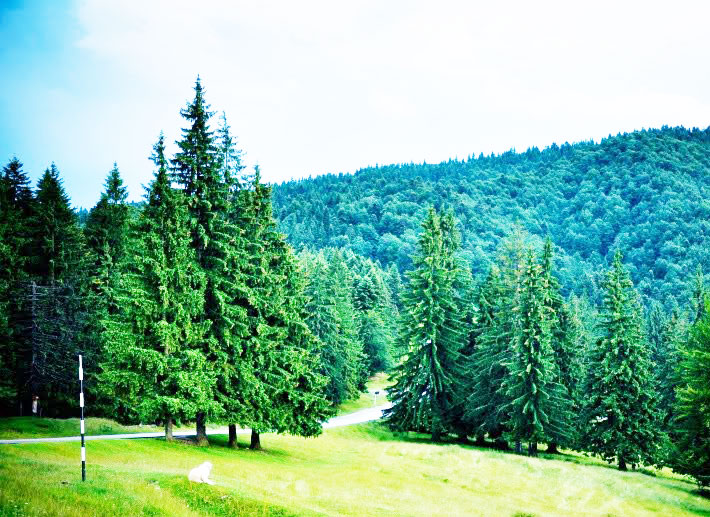

Silvicultura
Pădurile din România sunt printre cele mai bune din Europa, având un istoric de gospodărire eficace, prin care au ajuns la un standard înalt și un potențial economic important. În anul 2005, sectorul contribuia cu peste 9% la exporturile țării, reprezentând 3,5% din PIB.
Pădurile și alte terenuri cu vegetație forestieră (6.742,8 mii hectare) reprezintă 28,28% din fondul funciar al României. Acesta este compus din păduri (6.233 mii hectare), reprezentând 92,4% și alte terenuri acoperite cu vegetație forestieră.  Ponderea suprafețelor împădurite în totalul suprafeței României se situează sub media europeană și cu mult sub nivelul pe care cercetătorii îl consideră ca fiind un prag minim posibil, având în vedere condițiile naturale ale țării (32-35%).
Se previzionează că 65% din suprafața națională totală de pădure va fi retrocedată persoanelor private și autorităților publice locale. În prezent, proprietarilor privați li se cere să se asocieze, să-și înființeze ocoale silvice și să angajeze personal silvic sau să contracteze servicii silvice de la Regia Națională a Pădurilor Romsilva sau de la alte ocoale silvice. Până în anul 2010, s-au înființat 106 ocoale silvice, care administrează peste 1.000.000 ha de pădure.
Deși se poate urmări activitatea de pe parcelele de pădure aflate în proprietatea Romsilva sau a persoanelor care dețin astfel de suprafețe în parcurile naționale, controlul asupra proprietarilor privați de pădure, aflați în afara parcurilor naționale, constituie o problemă importantă. Actualmente, se estimează că se exploatează ilegal 100.000 metri cubi de lemn pe an.
Capacitatea de atingere a potențialului economic din sectorul forestier este limitată și de slaba accesibilitate a majorității pădurilor. Drumurile forestiere din România acoperă mai puțin de 42.000 km (ceea ce înseamnă circa 6,5 m/ha), reflectând cea mai slabă densitate din Europa. Ca urmare, peste 2 milioane ha de pădure sunt practic inaccesibile, indiferent dacă este vorba de desfășurarea activităților de gospodărire sau de exploatare.
Suprafața fondului forestier a înregistrat o creștere cu 0,9%, până la 6.484.572 hectare, la 31 decembrie 2007 comparativ cu 31 decembrie 2006. Volumul de masă lemnoasă recoltată în cursul anului 2007, conform reglementărilor legale, a fost de 17.238 mii metri cubi, cu 9,9% mai mare față de anul precedent. În anul 2007, s-au realizat lucrări de împăduriri pe o suprafață de 10.716 hectare, cu 31% mai puțin față de 2006.
România are în total 6,3 de milioane de hectare de pădure, dintre care 4,2 milioane se află în proprietatea statului. Se estimează că în perioada 1995-2010 au fost distruse prin tăieri ilegale aproximativ 127.000 de hectare. Dintre acestea, 95.000 de hectare au fost rărite, iar restul au fost pur și simplu rase. În anul 2007, în România au fost tăiați ilegal 175.743 de metri cubi de pădure.
În România se taie legal 17 milioane de metri cubi. La nivel național, în ultimii cinci ani, tăierile ilegale descoperite sunt de circa 175.000 – 180.000 de metri cubi pe an.
În anul 2004, România a exportat lemn în valoare de 832 de milioane de euro, cu un preț mediu de 20 de euro pe metrul cub.